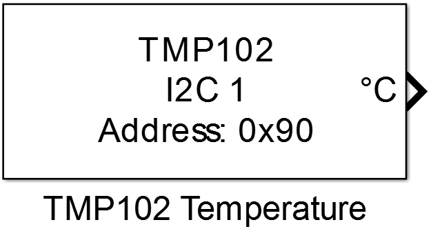
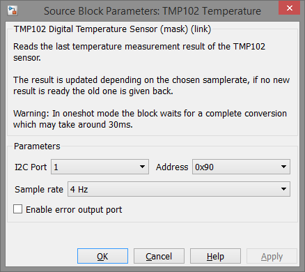

9.9. TMP102 Temperature
Reads the last temperature measurement result of the TMP102 sensor.
9.9.1. Library
/I2C
9.9.2. Description
{kind=link}
This block interfaces a TMP102 temperature sensor which measures the temperature at a selected sample rate or in one shot mode.
Attention
When one shot mode is selected the temperature reading takes 30ms, for this period the program is blocked until end of conversion, but sample rate can be higher than the predefined rates.
9.9.3. Data Type Support
The block’s data output data type is single for the temperature output and boolean for the error port.
9.9.4. Parameters and Dialog Box
9.9.4.1. I2C Port
Selects the identifier of the I2C peripheral which is configured by an I2C Config block.
9.9.4.2. Device Address
Bus address of the used TMP102 device.
9.9.4.3. Sample rate
Selects the conversion rate of the TMP102 device. If one shot is selected the sample rate can be higher but the reading is blocking for the duration of the conversion.
9.9.4.4. Enable error output port
Enables an error output port with return values:
- “0” if no error occurred
- “1” if there was an error during communication